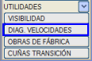
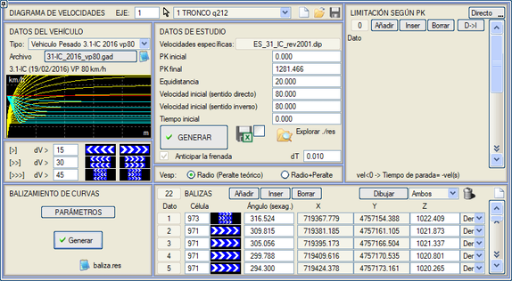
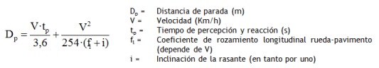
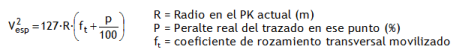
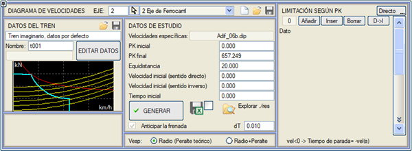
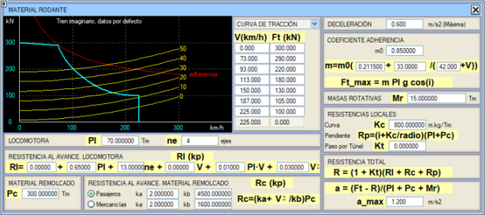
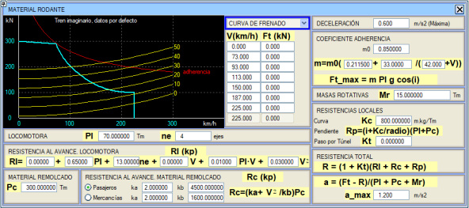
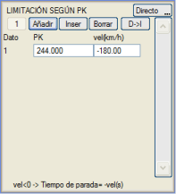
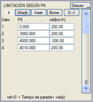

| |
|
HIZ DİYAGRAMI
|
ISTRAM®/ISPOL® hem karayolu hem de demiryolu projeleri için hız diyagramı raporlarının oluşturulmasına olanak tanır. Hız diyagramının elde edilmesi, DÜŞEY GÜZERGAH → [YARDIMCI ARAÇLAR] → [HIZ DİYAGRAMI] yolunda gösterilen diyalog kutusu aracılığıyla gerçekleştirilir. Hesaplama, aynı zamanda diyagramın boykesit ile birlikte gösterilmesini (şablon DiagVel.gui) sağlar ve karayolu eksenleri durumunda, diyagramdan görüş mesafesi etütleri için de yararlanılabilir.
Raporların .xlsx hesap tablosu formatında oluşturulmasına izin verilir. ETÜT VERİLERİ ve TAŞIT VERİLERİ yalnızca eksen değiştirildiğinde sıfırlanır. Karayolları Karayolu projelerinde hız diyagramının yaygın bir kullanımı, tırmanma şeritlerinin tasarımıdır. Ayrıca, burada belirlenen hızları dikkate alarak görüş mesafesi etütleri yapılmasına olanak tanır. Hız diyagramı, bir aracın bir eksen boyunca seyahat edebileceği maksimum hız olarak hesaplanır. Bu maksimum hız, her zaman aşağıdakilerden en küçüğüdür:

Menü, beş farklı taşıt tipinin kullanılmasına olanak tanır:

Bu eğriler, Ağır Taşıt 3.1-IC 2016 vp80.gad ve 3.1-IC_2016_V100.gad dosyaları tarafından verilir.
Etüt Verileri Burada, yarıçapa bağlı olarak spesifik hızları ve ayrıca hıza bağlı boyuna ve enine sürtünme katsayısını içeren bir plan tasarım tablosu (.dip) seçilmelidir.
......
# Radio Peralte Arecom Aminimo LonClo VelEsp ft RsMin RsMax fl # --------- ------- -------- -------- ------- ------ ------ ----- ----- ------- 670. 4.7 291. 245. 89.6 110.0 0.0955 300. 2000. 0.30600 570. 5.3 258. 217. 82.7 105.0 0.0999 278. 2000. 0.31300 485. 5.9 229. 192. 76.3 100.0 0.1039 255. 2000. 0.32000 410. 6.5 202. 170. 70.1 95.0 0.1083 231. 2000. 0.32700 350. 7.0 179. 151. 64.8 90.0 0.1122 208. 2000. 0.33400 305. 7.0 162. 136. 60.5 85.0 0.1165 188. 670. 0.34100 265. 7.0 145. 122. 56.4 80.0 0.1202 168. 522. 0.34800 225. 7.0 129. 108. 51.9 75.0 0.1269 146. 395. 0.35850 190. 7.0 113. 95. 47.7 70.0 0.1331 125. 309. 0.36900 155. 7.0 97. 82. 43.1 65.0 0.1446 103. 241. 0.37950 130. 7.0 85. 72. 39.5 60.0 0.1480 87. 198. 0.39000 105. 7.0 73. 61. 35.5 55.0 0.1568 70. 159. 0.40050 Spesifik hızı belirlemenin iki yolu vardır:

Bu, deverin yarıçapa uymadığı, iyileştirme projelerinde veya deverin standarda göre doğru bir şekilde uygulanamadığı durumlarda kullanışlıdır. Raporda, seçilen spesifik hızın yanı sıra, karşılaştırmalara olanak tanımak için sadece yarıçaptan elde edilen spesifik hızı yazdıran bir sütun da bulunur. Yukarıdakilerin dışında, aşağıdaki veriler beyan edilmelidir:
KİLOMETREYE GÖRE SINIRLAMA kutucuğu, biri doğru yönde, diğeri ters yönde ilerleyen çalışma için olmak üzere iki tablo tanımlamayı sağlar. Bu tablolarda kullanıcı, güzergahın farklı kilometrelerinde hız sınırlamaları girebilir. İki tablo değeri arasında programın hız değerlerini doğrusal olarak enterpole ettiği dikkate alınmalıdır; bu nedenle, noktasal sınırlama verileri girilirse, nominal hızları geri yüklemek için de veri girilmelidir. Örneğin, 400-500 ve 800-900 kesimlerinde hızı 50 km/s ile sınırlamak isteniyorsa, şu şekilde girilir:
[S->S] düğmesi, doğru yöndeki kilometreye göre sınırlama verilerini ters yöne kopyalamayı sağlar. Kilometreye göre herhangi bir sınırlama girilmezse, program tüm eksen boyunca 250 km/s varsayar. Etüt verileri belirlendikten sonra, [OLUŞTUR] düğmesi, doğru ve ters yönlerde hız diyagramını hesaplar ve aşağıdaki bilgileri içeren diagv.res raporunu oluşturur:
******************************************************************************
* * * DIAGRAMA DE VELOCIDADES * * * * * * PK. crecientes * * * ****************************************************************************** DATOS DEL VEHICULO: Vehiculo Pesado de la Norma 3.1-IC P.K. Inicial...: 0.000 P.K. Final.....: 800.510 Equidistancia..: 20.000 Vel. Inicial...: 0.00 T. Inicial.....: 0.00 P.K. t (sg) v (km/h) v.espec. v.limit. Radio i(mm/m) v.esp(R) a (m/s2) ----------- -------- -------- -------- -------- ----------- -------- -------- -------- 0.000 0.00 0.00 168.30 250.00 0.00 -8.051 168.30 0.00 20.000 6.03 26.39 168.30 250.00 0.00 -8.051 168.30 1.36 40.000 8.31 36.51 153.86 250.00 2428.07 -8.051 153.86 1.17 60.000 10.15 40.00 89.89 250.00 347.10 -8.051 89.89 0.00 80.000 11.95 40.00 69.96 250.00 186.91 -8.051 69.96 0.00 100.000 13.75 40.00 64.00 250.00 150.00 -8.051 64.00 0.00 120.000 15.55 40.00 64.00 250.00 150.00 -8.051 64.00 0.00 140.000 17.32 42.89 64.00 250.00 150.00 -7.168 64.00 1.09 160.000 18.89 48.41 64.00 250.00 150.00 -5.168 64.00 0.84 180.000 20.32 52.40 64.87 250.00 155.21 -4.569 64.87 0.75 200.000 21.65 55.94 78.70 250.00 251.64 -4.569 78.70 0.73 220.000 22.90 59.17 109.70 250.00 664.54 -4.569 109.70 0.71 240.000 24.09 62.19 168.30 250.00 0.00 -4.569 168.30 0.70 260.000 25.22 65.02 168.30 250.00 0.00 -4.569 168.30 0.69 280.000 26.30 67.64 168.30 250.00 0.00 -4.569 168.30 0.66 300.000 27.35 70.10 168.30 250.00 0.00 -4.569 168.30 0.67 320.000 28.37 70.73 168.30 250.00 0.00 -4.569 168.30 0.00 340.000 29.39 70.73 168.30 250.00 0.00 -4.569 168.30 0.00 360.000 30.40 70.73 168.30 250.00 0.00 -4.569 168.30 0.00 380.000 31.44 66.19 70.96 250.00 193.67 -4.569 70.96 -3.16 ... ... ... ... ... ... ... ... ... Şimdi kurpların yönlendirme panellerini yerleştirmeye geçebiliriz. Demiryolları Demiryolu projelerinde hız diyagramının hesaplanması için, eksenin bu tür eksenlere özgü bir plan tasarım tablosu (.dip) ile ilişkilendirilmiş olması gerekir. Her kurpta kullanılan Vp hızı, Plan menüsünün [P%] nomogramında zorunlu kılınan Vp'dir. Eğer tanımlanmamışsa, Genel sekmesindeki [Vp Kesimleri] kesimler tablosundaki hız kullanılır. Ve eğer önceki durumlarda tanımlanmamışsa, Genel menüsündeki eksenin Vp'si okunur. Deverler tablosunda hesaplandığında, Plan menüsünün [P%] nomogramından gelen zorunlu değerler dikkate alınır (plan eksenlerinin kaydedildiği .cej dosyasında saklanır). Bu diyagramda, Spesifik Hızın hesaplanması için iki seçenek seçebiliriz:

Seyir hızını da sınırlayan spesifik hızın hesaplanması için, tasarım tablosunda tanımlanan dengelenmemiş ivme değerleri de kontrol edilir. [VERİLERİ DÜZENLE] düğmesi, çeker ve çekilen araçlarla ilgili tüm verilerin yapılandırılması gereken başka bir diyalog kutusuna erişim sağlar. Bu veriler, .trn uzantılı dosyalara [Kaydet]  ve [Yükle] ve [Yükle]  komutlarıyla kaydedilebilir ve yüklenebilir. komutlarıyla kaydedilebilir ve yüklenebilir.Hız diyagramı çalışması için yapılandırma dosyasında, trenin özelliklerini içeren .trn dosyası da kaydedilir.

Bu veriler şunları içerir:
Rl = (A0 + A1•Pl + A2•ne) + (B0 + B1•Pl)•V + C•V2
Frenleme Eğrileri: Kütüphanede, elektrikli fren için Hız/Kuvvet eğrisinin tanımını içeren TranviaZCC.trn ve Tranvia.ZSC.trn adında iki dosyamız bulunmaktadır. Simülasyonda, elde edilen yavaşlama tanımlanan maksimumdan büyükse, maksimum değer kullanılır. 
Program ayrıca duraklama sürelerini simüle etmeye de olanak tanır. Hız(km/s) sütununa negatif bir değer girerek belirli bir duraklama süresi tanımlanabilir. Program bunu saniye cinsinden duraklama süresi olarak anlayacaktır. Bu kilometrelerin önüne ve arkasına hızı geri getirmek için başka veriler koymak gerekli değildir. Sonuçlar raporunda, eşit aralıklı kilometrelerin yanı sıra, sınırlı hızlar ve duraklamalar tablosundaki kilometreler de yazdırılır. Duraklama sürelerini uygulamanın başka bir olasılığı aşağıdaki örnekten yola çıkabilir. Bu, bir trenin 4+000 kilometresindeki bir istasyonda beş dakika durması ve frenlemede maksimum fren kapasitesinden, kalkışta ise maksimum çekiş kapasitesinden yararlanılması durumu olabilir. O zaman kilometreye göre sınırlı hızlar tablosu şekilde gösterilen görünüme sahip olacaktır ve şu şekilde okunacaktır:
0-3990 kesiminde maksimum hız 200 km/s olacaktır, ancak 4000 kilometresinde durabilmek için tren, 3990 kilometresinden çok önce fren yapmaya başlayacaktır, bu yüzden durma noktasından hemen önce ve sonra bir kilometre konulur. Eğer bu yapılmasaydı ve şu şekilde belirtilseydi:
O zaman program, ara kilometreler için 200 ile 0 km/s arasında maksimum hızları enterpole edecektir. [S->S] düğmesi, doğru yöndeki duraklama süreleri verilerini ters yöne kopyalamayı sağlar. Etüt verileri belirlendikten sonra, [OLUŞTUR] düğmesi doğru ve ters yönlerde hız diyagramını hesaplar ve raporları oluşturur. Eğim nedeniyle tren ilerleyemediğinde veya frenlemeyi öngöremediğinde bir mesaj gösterilir ve simülasyon o noktada terk edilir. Aşağıda, aşağıdaki parametreleri içeren bir demiryolu hız diyagramı örneği gösterilmektedir:
****************************************************************************** * * * HIZ DİYAGRAMI * * * * * * Artan KM. * * * ****************************************************************************** TREN: Hayali tren, varsayılan veriler Başlangıç KM...: 70.000 Bitiş KM.......: 15979.792 Adım Aralığı...: 20.000 Başlangıç Hızı...: 0.00 Başlangıç Zamanı.....: 0.00 KM
t (sn) v (km/s) v.özel. v.limit.
Yarıçap i(mm/m) F-R(kN) a
(m/s2) H(mm) ANC(m/s2) R (kN) ---- ------ -------- -------- -------- ----------- -------- -------- -------- ----- --------- -------- 70.00 0.00 0.00 50.00 0.00 0.00 -60.000 0.00 0.00 0 0.000 0.00 80.00 5.89 17.64 50.00 500.00 0.00 -60.000 508.11 1.20 0 0.000 -210.52 100.00 8.88 30.55 50.00 500.00 0.00 -60.000 505.67 1.20 0 0.000 -209.85 120.00 10.94 39.44 50.00 500.00 0.00 -60.000 503.80 1.20 0 0.000 -209.20 140.00 12.61 46.66 50.00 500.00 0.00 -60.000 502.17 1.20 0 0.000 -208.56 160.00 14.08 50.00 50.00 500.00 0.00 -60.000 501.38 0.00 0 0.000 -208.23 180.00 15.52 50.00 50.00 500.00 0.00 -50.956 468.55 0.00 0 0.000 -175.40 200.00 16.96 50.00 50.00 500.00 0.00 -30.956 395.96 0.00 0 0.000 -102.81 220.00 18.40 50.00 50.00 500.00 0.00 -10.956 323.36 0.00 0 0.000 -30.21 240.00 19.84 50.00 50.00 500.00 1277.20 9.044 248.49 0.00 12 0.075 44.66 260.00 21.28 50.00 50.00 500.00 206.27 19.000 200.63 0.00 72 0.467 92.52 280.00 22.72 50.00 50.00 500.00 123.00 19.000 191.02 0.00 120 0.784 102.13 |

 ile düzenleyebiliriz.
ile düzenleyebiliriz. Dosya şunları içermelidir:
Dosya şunları içermelidir: